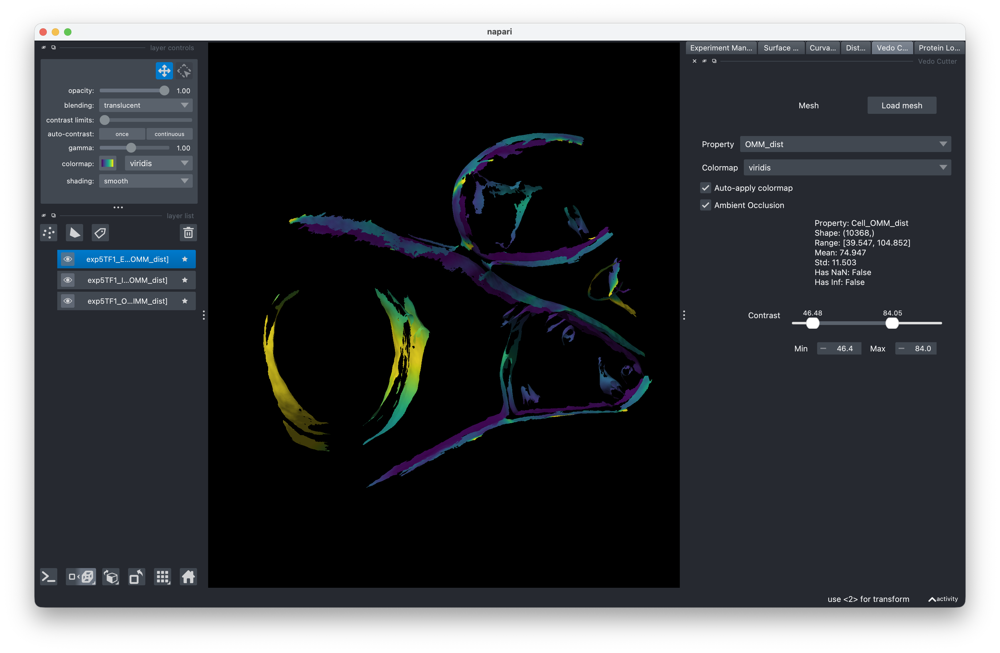

Surface Morphometrics GUI¶
A graphical interface for analyzing membrane ultrastructure in cryo-electron tomography data. Built on top of the surface morphometrics pipeline by Barad et al.

What it does¶
Surface Morphometrics GUI lets you run the full surface morphometrics pipeline without touching the command line. Load your cryo-ET segmentations, generate surface meshes, measure curvature and distance quantification, and visualize results, all from one interface.
Get started¶
- Installation — Set up the pipeline and GUI
- Quick Start — Run your first analysis end-to-end
User Guide¶
Step-by-step guidance for each stage of the workflow:
- Experiment Setup — Configure your experiment
- Surface Mesh Generation — Generate meshes from segmentations
- Curvature Analysis — Run curvature analysis
- Distance & Orientation — Measure inter/intra-membrane distances
- Visualization — View meshes, properties, and protein structures in 3D
- Resuming Experiments — Pick up where you left off
Learn more¶
- About Surface Morphometrics — Background and references
- Original pipeline repository